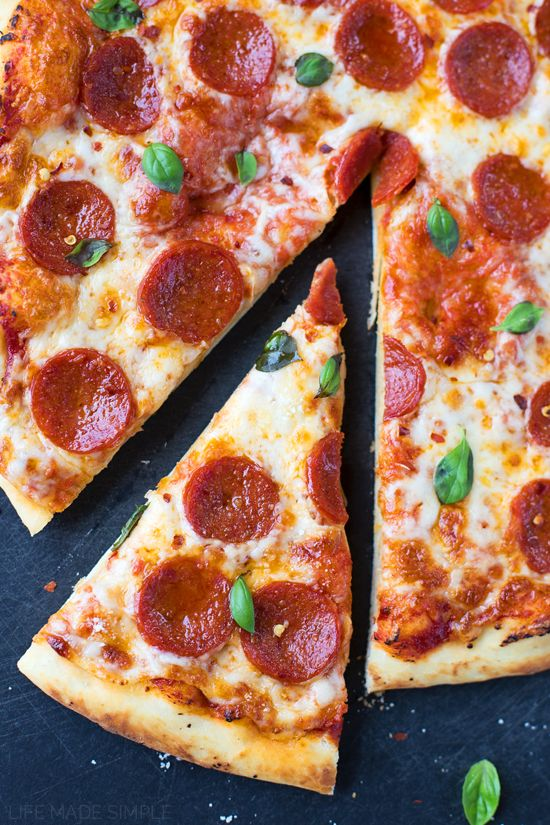

How to make spicy noodles!

Pizza is...
a classic italian pie that you can enjoy quickly whenever and wherever!
This parially Homemade Pepperoni Pizza has everything you want—a great crust,
gooey cheese, and tons of pepperoni. The secret to great pepperoni flavor?
Hide extra under the cheese! Who needs delivery?
Ingredients:
- 12,14or 16 inch pizza crust of your chouce
- some pizza sauce
- some grated mozzerella cheese
- some chilli flakes
- some black pepper
- some pepperonis or other meat!
Baking Steps:
- combine the spices with the sauce and mix
- put the sauce on the crust, *apply evenly*
- put on cheese
- place the pepperoni however you want
- preheat oven to about 500°F
- Cook for about 25 minutes
- slice it and serve!
Back to top
Return to main page